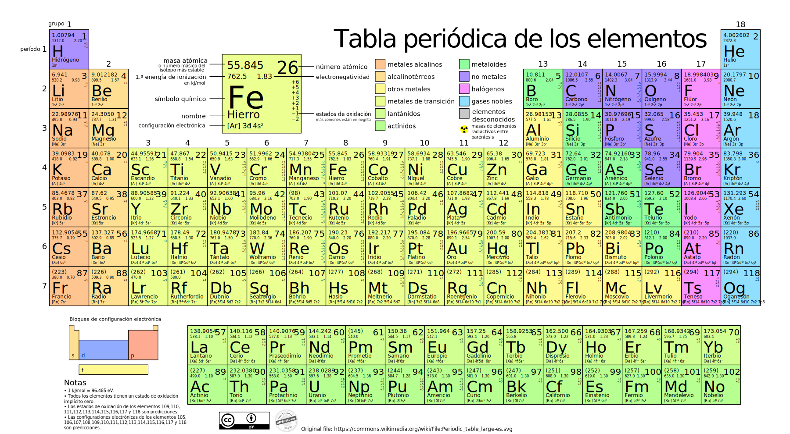

Au
Símbolo Químico
79
Número atómico
1.064°C
Punto de fusión
196.967
Masa atómica
19,32 g/cm³
Densidad
LA TABLA PERIODICA
DATOS
| Oro (Au) - Datos Clave | |
|---|---|
| Número atómico | 79 |
| Masa atómica | 196, 96657 u |
| Densidad | 19,32 g/cm³ |
| Punto de fusión | 1.064°C |
| Conductividad eléctrica | 4, 1 × 10⁷ S/m |